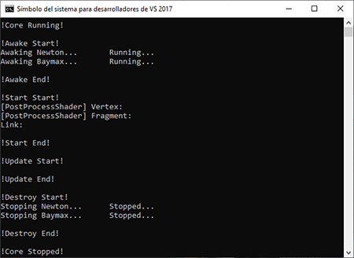

Para empezar a utilizar lucifer deberemos importarlo e inicializarlo.
main.cc |
|---|
#include "./deps/Lucifer/src/core/lucifer.cc"
|
Una vez compilado lo ejecutamos y obtendremos la siguiente salida por consola
Ahora podemos crear nuestro primer módulo de prueba
exampleModule.cc |
|---|
void exampleAwake()
|
Y debemos añadir el fichero y cargar el modulo
main.cc |
|---|
#include "./deps/Lucifer/src/core/lucifer.cc"
|